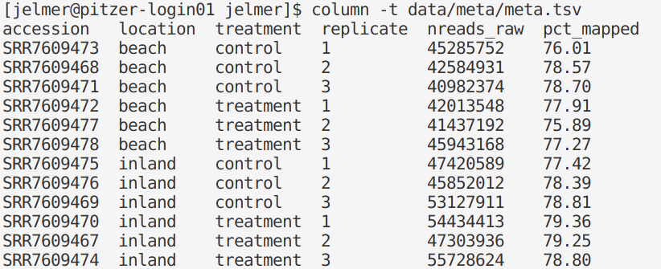
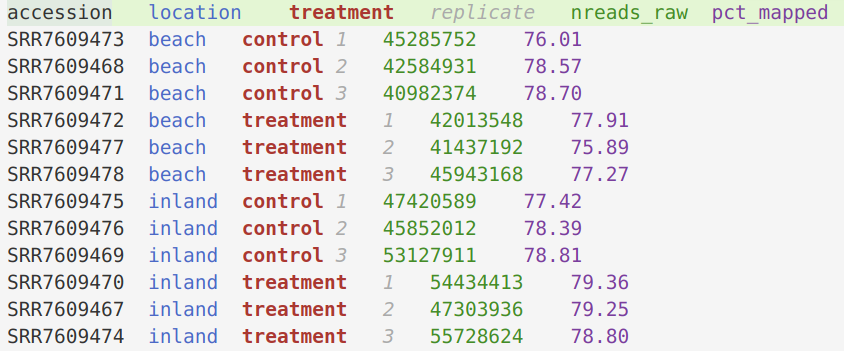
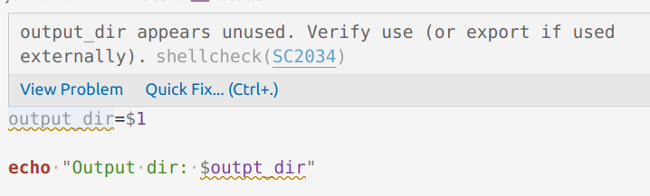
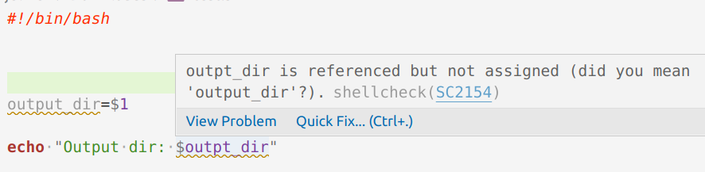

Workshop Notes
Copying your workshop files – and some topics that came up while teaching the workshop
1 Copy workshop files to your home directory
Remember that the PAS2250 directory, where we put our files during the workshop, is a scratch directory: those files will eventually be automatically deleted.
The command below would copy the files you created and copied during the workshop to a directory (folder) in your home directory called 2022-08_command-line-workshop. In the command, replace <your-folder> by the actual name of your folder.
cp -r /fs/ess/scratch/PAS2250/participants/<your-folder> ~/2022-08_command-line-workshopFor instance:
cp -r /fs/ess/scratch/PAS2250/participants/mike ~/2022-08_command-line-workshopNote that ~ is a shortcut to your home directory (you can do echo ~ to check this).
2 Things that came up during the workshop
2.1 OSC Help
OSC website with help: https://osc.edu, especially:
2.2 A few shell keyboard shortcuts
Ctrl + C to cancel a running process. It can also get you out of situations where you unexpectedly aren’t getting your prompt back, such as when you’ve forgotten to close a quote.
Ctrl + D to exit your current shell (same as the command
exit). For example, this will close your terminal if you’re on a login node, and send your shell back to a login node if you’re on an interactive compute node.Ctrl + R: Remember that the shell keeps a record of all of the commands you’ve run and that you can use the up arrow to scroll back through these. Alternatively, this keyboard shortcut allows you to search for text within those commands.
2.3 Viewing (small) text files
A nice trick to get columns lined up when viewing tab-separated files in the terminal is to use the command column:
column -t data/meta/meta.tsv
Also, don’t forget that you can simply open such files in the VS Code editor!
Moreover, the “Rainbow CSV” VS Code extension will help to easily distinguish columns in comma-and tab-separated files (.csv & .tsv file, though note that these are often just saved as .txt, too).

2.4 Shellcheck
The Shellcheck extension is a very useful VS Code extension that checks the code in your shell script for things like: unused variables, referencing non-existent variables, syntax errors, wrong or suboptimal coding practices, and so on. See these two screenshots for an illustration of the functionality:


To find and install VS Code extensions, click the Extension icon in the Activity Bar (narrow side bar): see this page.
In VS Code on OnDemand, Shellcheck sometimes fails to install. It should certainly work if you install VS Code on your computer, though!
2.5 File permissions
# Give execute permissions to all files in the folder "myfolder"
chmod +x myfolder/*
# Give execute permissions to all shell scripts in the folder "myfolder"
chmod +x myfolder/*sh
# For folders, people need _execute_ permissions to enter them.
# If you want others to be able to see and copy all your files in a certain folder:
chmod -R +X myfolderFore more, see this file permission tutorial.
3 Want to learn R? Sign up for OSU Code Club!
Sign up for OSU Code Club here!
We will restart Code Club in September for the fall semester, working our way through the book R for Data Science.